01
习近平向第140届中国进出口商品交易会致贺信
10月14日，国家主席习近平向第140届中国进出口商品交易会（广交会）致贺信。
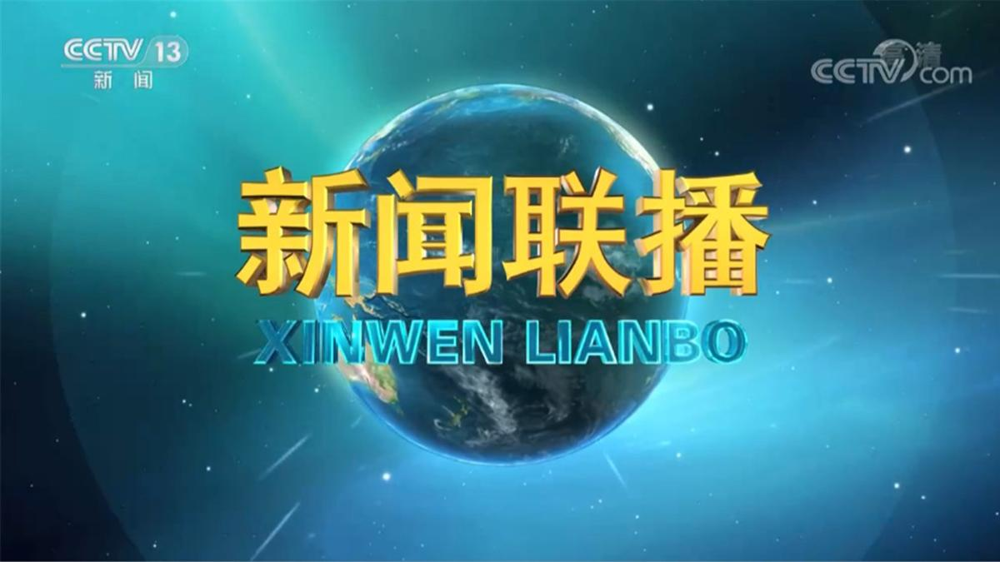
10月14日，国家主席习近平向第140届中国进出口商品交易会（广交会）致贺信。
本台今天（10月14日）播发央视快评《为世界发展繁荣持续注入新动力》。
时隔10年，全国卫生与健康大会再次召开。习近平总书记出席全国卫生与健康大会并发表重要讲话，强调要坚定不移走中国特色卫生与健康发展道路，确保“十五五”时期健康中国建设取得决定性进展。总书记的重要讲话引发热烈反响。大家表示，要深入学习领会，把建设健康中国作为一项重要战略任务，扬优势、固基础、补短板、强弱项，持续用力、久久为功，不断提高人民健康水平。
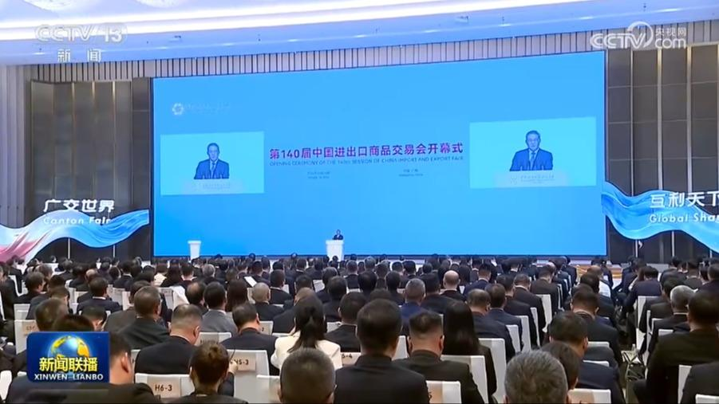
国务院总理李强14日在广州出席第140届中国进出口商品交易会开幕式并发表主旨演讲。
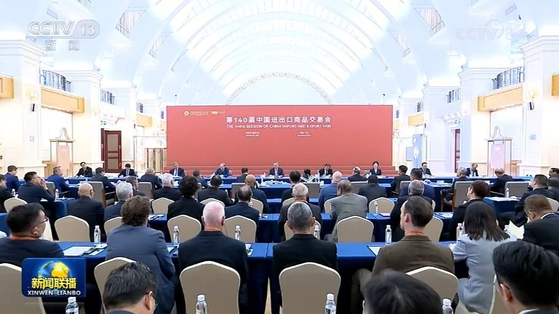
国务院总理李强14日在广州出席“广交世界70年”座谈会。在听取与会境外采购商和参展企业代表发言后，李强表示，广交会举办70年来，伴随中国开放和发展不断成长壮大，不仅成为中国对外开放的亮丽名片，也成为世界观察中国的重要窗口；不仅成为传统货物贸易的大舞台，也成为新型贸易发展的风向标；不仅成为中外经贸合作的纽带，也成为增进理解友谊的桥梁。
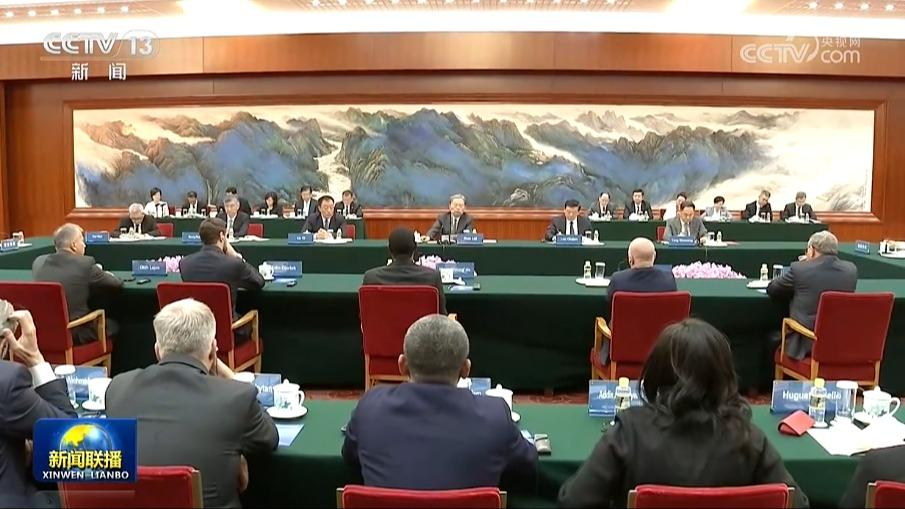
全国人大常委会委员长赵乐际14日在北京集体会见出席2026年国际议员友好交流论坛的各国代表。
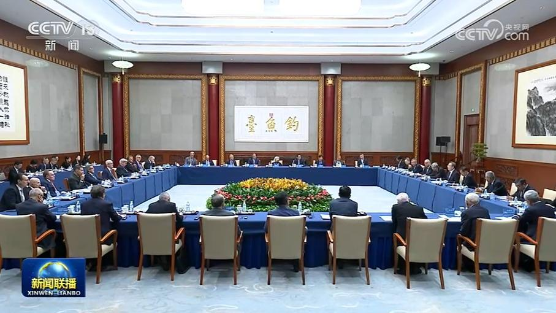
中共中央政治局常委、国务院副总理丁薛祥13日在北京会见清华大学经济管理学院顾问委员会委员代表。
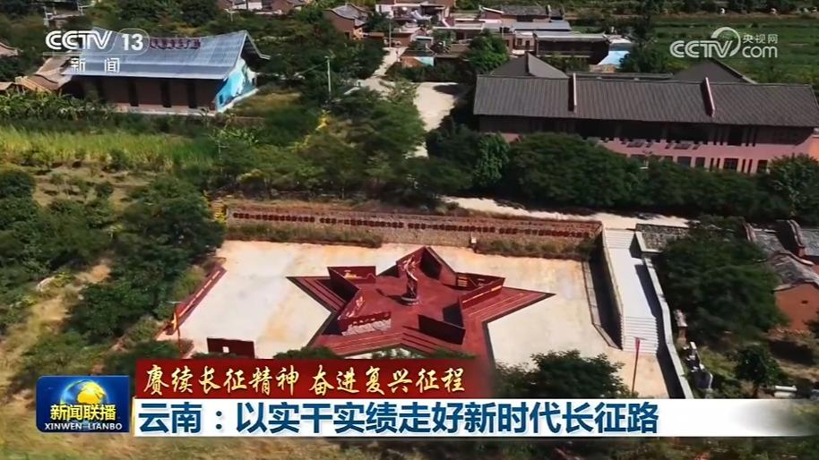
云南是红军长征的重要途经地，红军长征在云岭大地播撒革命火种。站在新的历史起点，云南各族儿女赓续红色血脉，传承弘扬伟大长征精神，奋力谱写中国式现代化云南篇章。
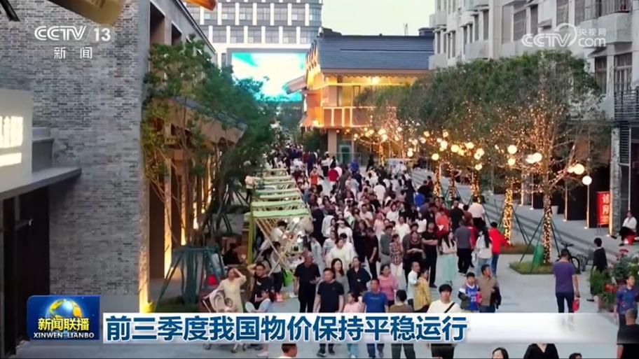
国家统计局今天（10月14日）发布的数据显示，今年前三季度，全国居民消费价格指数CPI同比上涨0.9%，9月份当月同比上涨0.9%，涨幅比上月扩大0.1个百分点，物价总水平保持平稳运行。
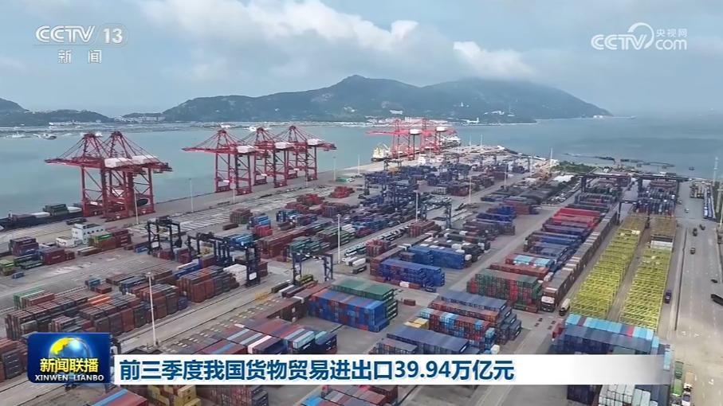
国务院新闻办今天（10月14日）上午举行新闻发布会，海关总署介绍，今年前三季度，我国外贸进出口快速增长、量质齐升。
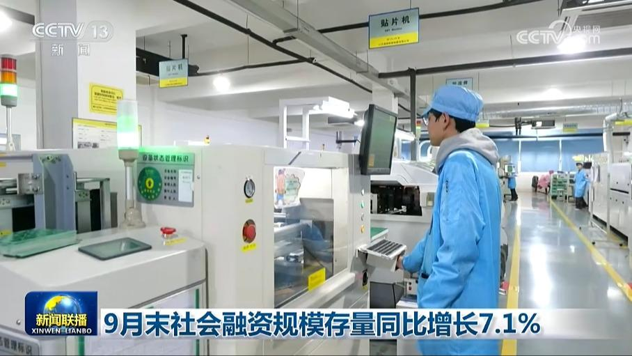
今天（10月14日），中国人民银行公布的金融数据显示，9月末，广义货币（M2）余额359.63万亿元，同比增长7.2%；社会融资规模存量468.17万亿元，同比增长7.1%。二者增速同经济增长、价格总水平预期目标相匹配，显示金融总量增长合理，助力经济持续向新向优向好发展。
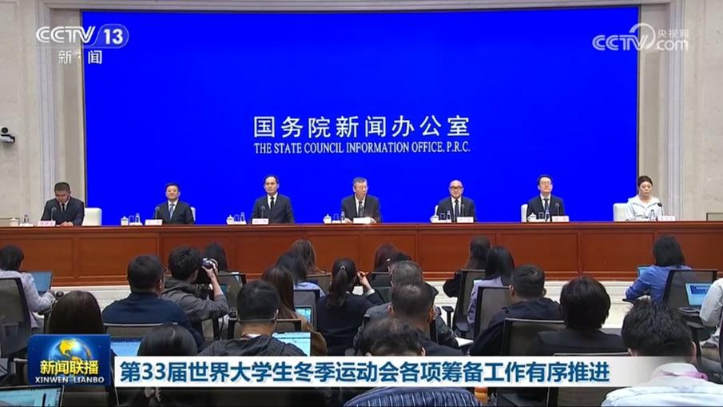
今天（10月14日），国务院新闻办召开发布会，教育部、国家体育总局、吉林省人民政府等部门相关负责人介绍长春2027第33届世界大学生冬季运动会筹备情况。
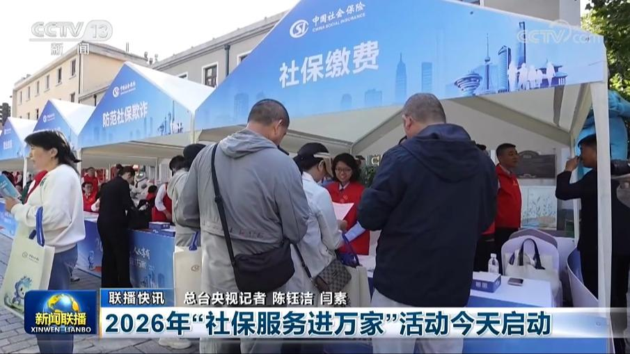
中央依法治国办启动领导干部依法办事情况法治督察
俄罗斯联邦安全局13日称，在俄罗斯萨哈林州逮捕一名涉嫌从事间谍活动的日本人。据俄联邦安全局消息，该嫌疑人是一名日本记者。调查发现，他收集、存储了与俄罗斯防务有关的情报，并按日本情报机构指示行事，危害俄罗斯安全。据俄媒报道，这名日本人收集的情报涉及俄日争议岛屿所在的千岛群岛。
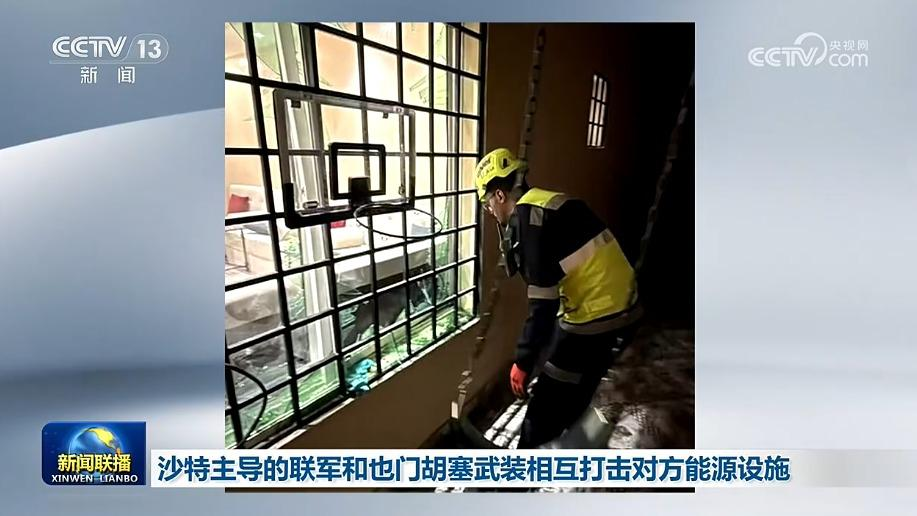
沙特阿拉伯主导的多国联军13日称，当天打击了也门胡塞武装重要设施，包括位于萨那的也门石油公司萨巴哈中央站，以及位于荷台达等地的燃料储存、运输和卸载设施。联军还称，当天拦截并摧毁了也门胡塞武装射向沙特首都利雅得和沙特东部城市宰赫兰等地的导弹和无人机。另据沙特民防部门消息，在利雅得，导弹拦截碎片造成4人受伤、部分建筑受损。
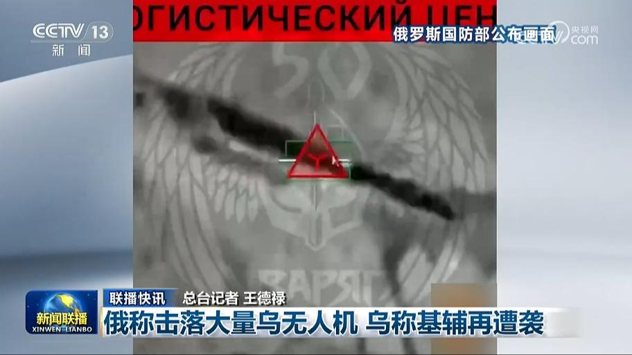
俄称击落大量乌无人机 乌称基辅再遭袭